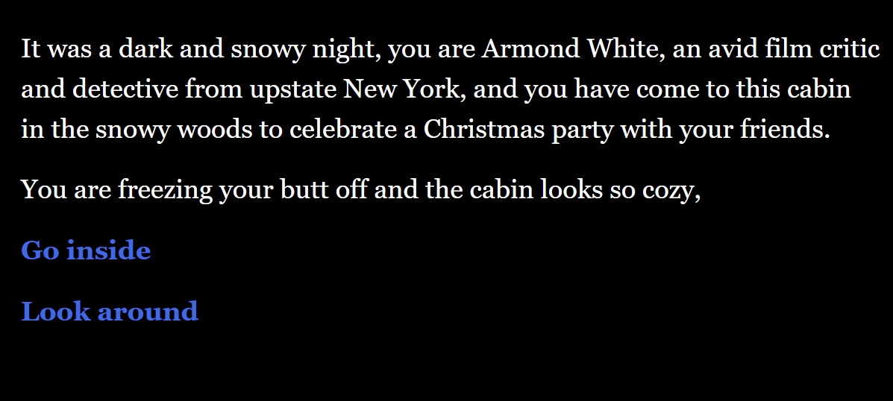

Tools Used: Ren'Py, PythonDescription: Justice Well Played: The Prosecution's Case is an educational story-based visual novel game developed for Impartial, a nonprofit focused on criminal justice reform. The game is a part of a series, set to release in 2026, that takes on the perspective of Raven, who was wrongfully accused of a crime she did not commit and now must try to go through the legal system to clear her name. This specific game focuses on the prosecution's case part of a court trial, and in it, the player plays as the prosecutor to try to get Raven convicted. This shows the flaws of the criminal justice system, as the player has to question witnesses in a way that makes Raven seem guilty, rather than trying to arrive at the truth. In the game, the player has to question 7 different witnesses and present evidence to try to convince the judge, which leads to one of 2 endings. I created this game with a team of 5, where I was one of 2 main programmers. This was the first game I made specifically for a company, so I learned a lot about having to communicate with my boss to get feedback and make changes to the game based on what they'd like in a timely manner so that the game gets completed. Check out Impartial: Impartial
Espionausage: Wiener Takes All
Tools Used: GameMaker, GMLDescription: Espionausage: Wiener Takes All is a blackjack-inspired stealth game developed for Ludum Dare 56, themed around Tiny Creatures. In the game, the player cheats at blackjack with the help of a tiny sausage companion, who can secretly swap cards, peek at the next card in the deck, or reveal the dealer's hidden card. However, using these abilities too often raises suspicion, and if the player gets caught, the game ends. This was my first game jam experience, developed in just three days with a team of four, where I served as one of two main programmers. It was a lot of fun trying to make as creative and functional of a game as we could with these constraints, and I learned a lot more about game development in that short timeframe. Download here: Espionausage: Wiener Takes All
2D Game Engine
Tools Used: C++, SDL2, ZeroMQDescription: 2D Game Engine is a fully custom game engine built from the ground up using the SDL2 library as its core framework. The game engine follows a component-based architecture, meaning any new features a user would want their game to have can be programmed as a component in the engine. These can be components like a win state, AI, or interactable objects. It also supports multiplayer functionality through a multithreaded client-server model implemented with the ZeroMQ library. I worked on this with a team of 3, and it was my favorite project I've made, as it's very interesting to create the foundation on which the games themselves are made. It was also fun stretching the limits of my game engine to make 3 completely different games.
Wolf's Den
Tools Used: HTML, CSS, JavaScript, SQL, Docker, JSON, WebmanifestDescription: Wolf's Den is a point-of-sales app from the customer's perspective. Wolf's Den is similar to any restaurant website capable of handling orders, so users are able to look at the menu and place an order. I worked on this project in a team of 2, where the main requirement was that the program had to be a Progressive Web App (PWA), meaning that the program had to be installable and have a consistent experience among different devices. This project was also my first experience with using SQL and learning how to use databases with it.
Coffee Maker
Tools Used: Java, HTML, CSS, JavaScript, BootstrapDescription: Coffee Maker is a point-of-sales app from the employee's perspective. The employee is able to handle inventory, make, modify, and delete coffee recipes, and take orders from customers. This project helped me learn a lot about APIs and how to use them effectively to create and modify entries in a database.
Chat Demo
Tools Used: HTML, CSS, JavaScript, Docker, JSONDescription:Chat Demo is a messaging app with the main focus being the ability to allow users to send and receive messages in real time. I created this project to see how to use WebSockets to enable communication between users across different pages.
Howler
Tools Used: HTML, CSS, JavaScript, Docker, JSONDescription:Howler is a figurative social media website for NC State students. Users of Howler are able to do a few things, like make posts (called howls), follow other students, and view howls from the people they follow. I created this site to be dynamic, since each user would need their own page, which wouldn't be feasible with a static site.
North Carolina Parks
Tools Used: HTML, CSS, JavaScript, JSONDescription:North Carolina Parks is a web app made to show off all the parks in North Carolina and which county they belong to. Users are able to navigate to each park and filter parks by county. This was the first dynamic webpage I created, as each park would need their own page, but with hundreds of parks, it wouldn't be realistic to do so on a static site.
Calculator
Tools Used: HTML, CSS, JavaScriptDescription:Calculator was the first major website I programmed at NC State. It functions like a standard calculator but includes a history feature that lets users reuse numbers from previous calculations. I programmed the calculator functionality entirely in Javascript, mainly utilizing a finite state machine to handle all possible user inputs.
Wolf Scheduler
Tools Used: JavaDescription:Wolf Scheduler is a class organizing tool meant for students to create a semester schedule. With Wolf Scheduler, students are able to add classes, add personal events (like club meetings), and get informed of any time conflicts. I programmed Wolf Scheduler to learn more about fundamental programming concepts like abstract classes or Model-View-Controller architecture.
Santa Quest
Tools Used: PuzzleScript Plus, HTMLDescription:Santa Quest was the first game I created as part of a team. The idea of this game was that Santa needed to get to the top of the house to enter the chimney and deliver the present. Our team of four collaborated on the project, where my main role was to program the movement and the obstacles like the ladders and spikes.Play here: Santa Quest
Sleepy Vampire
Tools Used: PuzzleScript Plus, HTMLDescription:Sleepy Vampire was the second game I programmed at NC State. For this game, I wanted to create a puzzle game with a fun theme of a vampire wanting to cover all the lights so that they can finally get some sleep. PuzzleScript was a great fit for this project, encouraging players to carefully plan each move they make.Play here: Sleepy Vampire
A Cold Night

Tools Used: Twine, HTMLDescription:A Cold Night was my first game that I programmed at NC State. It's a choose-your-own-adventure murder mystery where the player's decisions determine whether they solve the case or not. I tried to keep the tone pretty lighthearted, similar to something like Knives Out. Play here: A Cold Night
System Test Planner
Tools Used: JavaDescription:System Test Planner is an organizational tool to help with organizing any tests made for projects. The planner is able to add any number of projects, and users are able to create tests for these projects that they can update to either be passing or failing. The user is able to filter specifically for failing tests for any project as well.
Requirements Manager
Tools Used: JavaDescription:Requirements Manager was the first big project I programmed while at NC State. The main purpose of this project was to be a program to help organize any projects through user stories. It allows users to create, track, and update user stories, making project planning more structured and efficient.